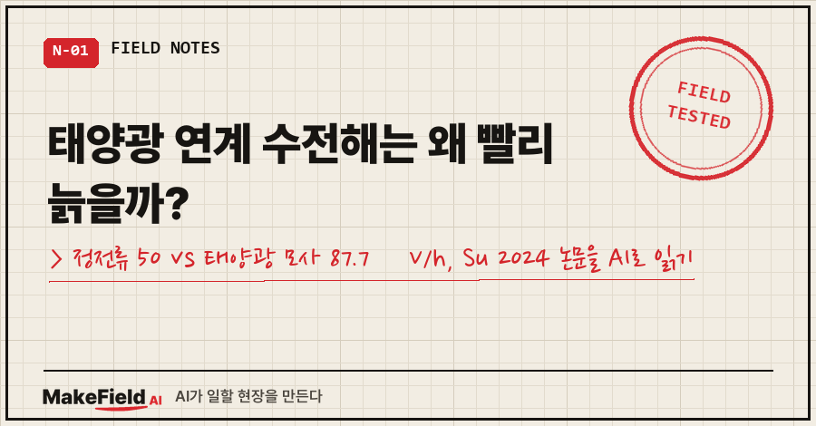
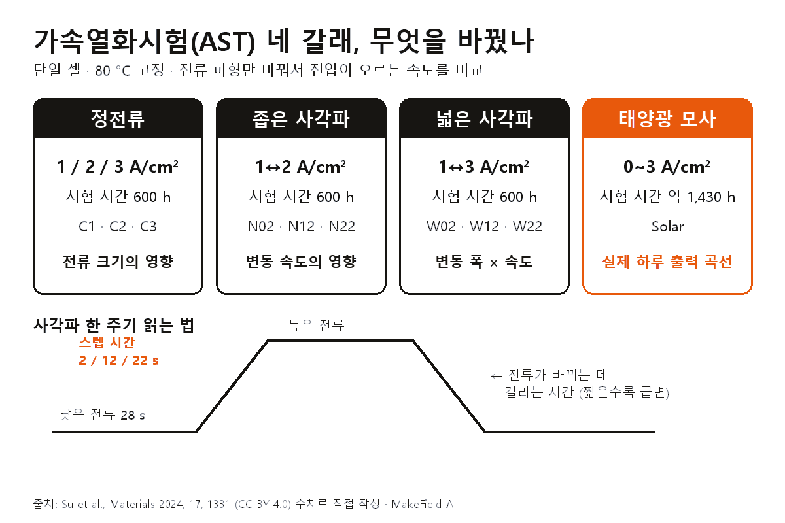
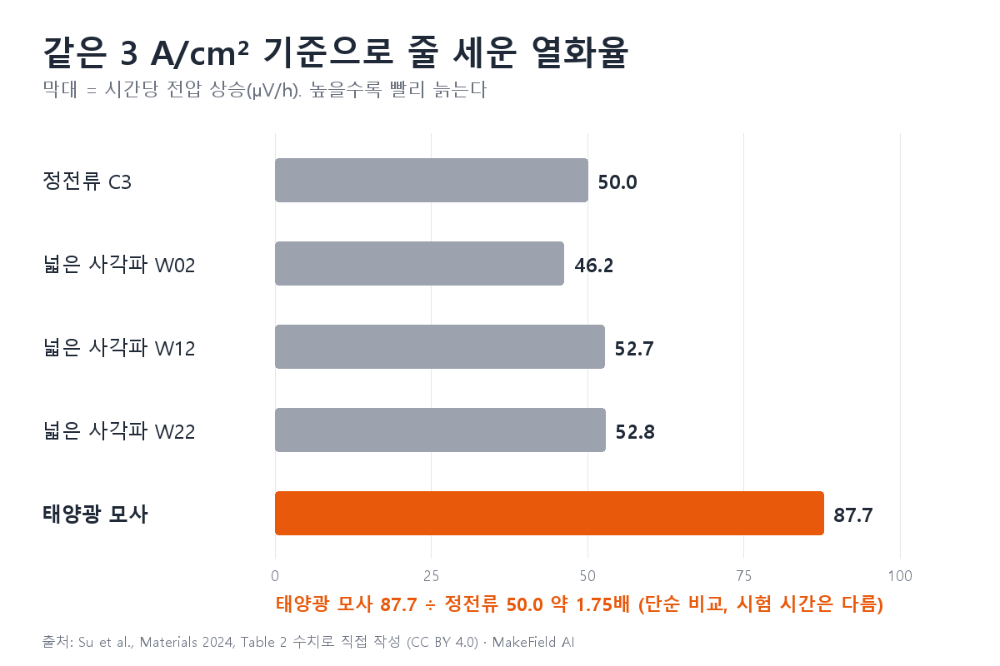
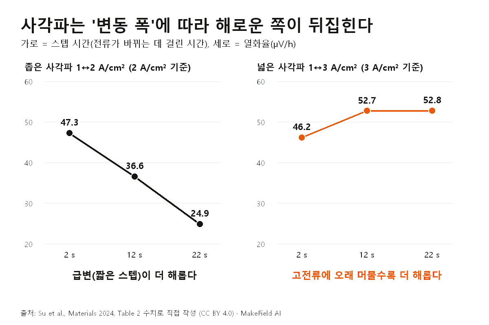
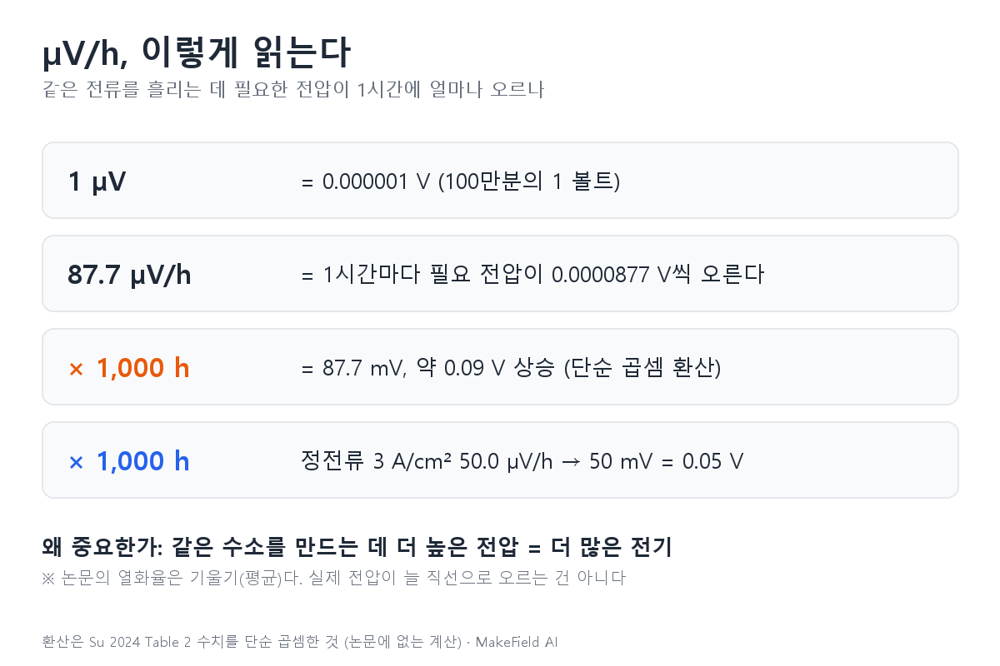
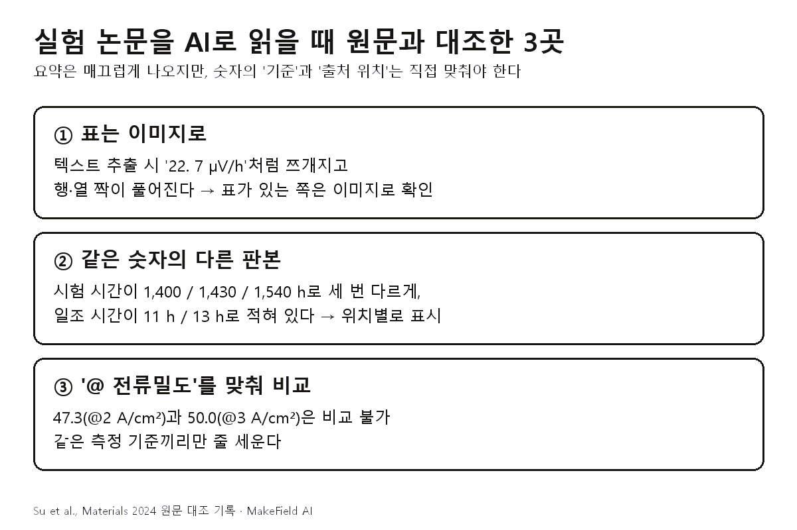

태양광 연계 수전해 열화는 "출력이 오르내리면 조금 더 닳겠지" 정도가 아니었습니다. 같은 PEM 단일 셀을 80 °C에서 시험했을 때, 3 A/cm² 기준 열화율이 정전류 운전은 50.0 µV/h, 태양광 하루 출력을 흉내 낸 변동 운전은 87.7 µV/h로 약 1.75배였어요 [Su 2024, Table 2].
'논문 읽는 AI' 15편, 4부 '닳는 것'의 두 번째 글입니다. 지난 편이 "산화극 어디서 무엇이 무너지나"였다면, 이번엔 어떻게 돌리느냐가 늙는 속도를 얼마나 바꾸나를 숫자로 봅니다.
읽은 논문은 중국과학원 고체물리연구소·안후이대 Zhengquan Su 등 4명이 학술지 Materials(2024, 17권, 1331)에 낸 실험 논문이에요. 정전류, 사각파, 태양광 모사라는 세 가지 가속열화시험(AST)을 같은 조건에서 돌려 비교했습니다 [Su 2024, Abstract].
1. 열화율 'µV/h'는 어떻게 읽나요
µV/h는 같은 전류를 흘리는 데 필요한 전압이 1시간에 몇 마이크로볼트(100만분의 1 볼트)씩 오르는지를 뜻하는 열화 단위예요. 숫자가 클수록 빨리 늙는다는 뜻입니다.
용어부터 풀어 둘게요.
- PEM 수전해: 양성자만 통과시키는 고분자 막을 사이에 두고 물을 수소와 산소로 나누는 장치
- MEA(막-전극 접합체): 막 양쪽에 촉매를 붙인 핵심 부품. 장치 성능 저하는 주로 MEA에서 온다고 논문은 설명해요 [Su 2024, 1장]
- 가속열화시험(AST): 수만 시간을 기다릴 수 없으니, 일부러 가혹한 조건을 걸어 늙는 모습을 짧은 시간에 끌어내는 시험 [Su 2024, 1장]
전압이 오르면 왜 문제일까요. 논문은 티타늄 부품의 부동태화(표면 산화막)를 설명하며, 같은 전류밀도를 유지하려면 더 높은 전압이 필요해지고 전해 과정의 에너지 소비와 전압이 늘어난다고 적었어요 [Su 2024, 3.1절]. 같은 수소를 만드는 데 전기가 더 든다는 얘기죠.

감을 잡으려고 단순 곱셈을 해 보면, 87.7 µV/h로 1,000시간을 돌면 약 87.7 mV(0.09 V), 50.0 µV/h면 50 mV가 오릅니다. 이건 논문에 없는 환산이고, 논문의 열화율은 직선을 맞춘 기울기(평균)라는 점을 같이 기억해 두세요 [Su 2024, Fig.2 설명].
2. 무엇을 풀려 했고, 어떻게 시험했나요
재생에너지의 간헐성과 출력 변동이 PEM 수전해 성능을 떨어뜨릴 수 있는데, 실험실에서 어떤 동적 조건이 열화를 빠르게 하는지는 아직 잘 정리되지 않았다는 게 출발점이에요 [Su 2024, 1장]. 정전류 시험만으로는 실제 운전 조건을 정확히 반영하지 못한다는 문제의식도 밝혔습니다 [Su 2024, 1장].
시험 장치는 활성 면적 30.624 cm²의 단일 셀이고, 80 °C에서 탈이온수를 분당 100 mL로 흘렸어요 [Su 2024, 2.1절]. 바꾼 건 전류 파형뿐입니다.

| 시험 | 전류 조건 | 시험 시간 | 보려는 것 |
|---|---|---|---|
| 정전류 C1·C2·C3 | 1 / 2 / 3 A/cm² 고정 | 600 h | 전류 크기 |
| 좁은 사각파 N02·N12·N22 | 1↔2 A/cm² | 600 h | 변동 속도 |
| 넓은 사각파 W02·W12·W22 | 1↔3 A/cm² | 600 h | 변동 폭 × 속도 |
| 태양광 모사 Solar | 0~3 A/cm² | 약 1,430 h | 실제 하루 출력 곡선 |
출처: [Su 2024, Table 1·2.2절]
사각파 이름의 숫자는 스텝 시간, 즉 전류가 낮은 값에서 높은 값으로 바뀌는 데 걸리는 시간(2·12·22초)이에요. 한 주기는 28초 유지 구간과 전류가 바뀌는 구간으로 이뤄집니다 [Su 2024, 2.2절]. 스텝 시간이 짧을수록 전류가 급하게 꺾이는 셈이죠. 태양광 모사는 2022년 6월 중국 칭하이의 하루 발전량을 바탕으로 만든 곡선이에요 [Su 2024, 2.2절].
3. 무엇을 알아냈나요 — 세 가지 결과
정전류에선 전류가 클수록, 사각파에선 변동 폭에 따라 해로운 쪽이 뒤집히고, 태양광 모사가 모든 시험 중 가장 빨리 늙었다는 게 결론이에요 [Su 2024, 4장].
① 정전류: 세게 돌릴수록 빨리 늙는다. 1 A/cm²에서 22.7, 2 A/cm²에서 26.1, 3 A/cm²에서 50.0 µV/h였어요 [Su 2024, Table 2]. 2→3 A/cm² 구간에서 거의 두 배로 뛴 점이 눈에 띕니다. 3 A/cm²로 600시간 돈 뒤엔 산화극 촉매층 표면에 균열과 돌기가 늘었고, 원소 분석에서 이리듐 비율이 86.62%에서 81.71%로 줄었다고 해요 [Su 2024, 3.1절].
② 사각파: 폭이 좁으면 '급변'이, 넓으면 '고전류에 머문 시간'이 범인.

| 시험 | 스텝 2초 | 스텝 12초 | 스텝 22초 | 경향 |
|---|---|---|---|---|
| 좁은 1↔2 (2 A/cm² 기준) | 47.3 | 36.6 | 24.9 | 급할수록 빨리 늙음 |
| 넓은 1↔3 (3 A/cm² 기준) | 46.2 | 52.7 | 52.8 | 느릴수록 빨리 늙음, 상한 보임 |
출처: 단위 µV/h [Su 2024, Table 2]
저자들의 해석은 이래요. 좁은 폭에선 낮은 전류의 충격이 작아 전류가 빠르게 바뀌는 것 자체가 주된 요인이 되고, 넓은 폭에선 스텝이 길수록 높은 전류에 더 오래 노출되는데 그 영향이 전류 전환보다 크다는 거예요 [Su 2024, 3.1절]. 논문은 이 대목을 "추정(speculation)"이라고 표현했습니다.
③ 태양광 모사: 가장 빠른 열화. 1 A/cm² 기준 39.7, 2 A/cm² 기준 52.4, 3 A/cm² 기준 87.7 µV/h로, 모든 시험 중 최고였어요 [Su 2024, Table 2]. 논문은 태양광 모사가 정전류와 사각파를 여러 개 섞은 형태이고, 높은 전류밀도와 긴 스텝 시간이 겹칠 때 가장 심한 열화가 나온다고 정리했습니다 [Su 2024, 4장].

같은 3 A/cm² 기준으로만 줄 세우면 정전류 C3 50.0, 넓은 사각파 46.2~52.8, 태양광 모사 87.7 µV/h입니다 [Su 2024, Table 2]. 태양광 연계 수전해가 효율 문제를 넘어 내구성 문제와 직결되는 이유가 이 막대 하나에 담겨 있어요.
4. 왜 그렇게 늙나요, 그리고 이 논문의 한계
논문은 고주파 저항(HFR) 증가를 티타늄 판의 부식·부동태화 몫으로 보고, 전체 열화에서 이 몫을 빼서 나머지를 분리했어요 [Su 2024, 3.2절].
- 초기 100시간은 계산에서 제외: 모든 시험에서 처음엔 저항이 살짝 줄었는데, 저자들은 활성화가 덜 된 탓으로 보고 첫 100시간을 활성화 기간으로 처리했어요 [Su 2024, 3.2절]
- 태양광 모사가 티타늄을 가장 심하게 상하게 함: HFR 증가로 드러났다고 해요 [Su 2024, 3.2절, Fig.6]
- 반대 방향의 신호: 전체 열화와 달리, 저항 몫의 열화는 스텝 시간이 길수록 줄었어요. 전류가 급변하면 촉매층에서 생긴 기체가 제때 빠지지 못하고 확산층에 남아 물질 교환을 막는다는 추정을 내놨습니다 [Su 2024, 3.2절, Fig.7]
즉 "급변"과 "고전류 체류"가 서로 다른 경로로 셀을 상하게 하고, 태양광 곡선은 두 가지를 다 갖고 있는 셈이에요.
이 논문의 한계도 짚어 둘게요.
- 단일 셀 하나의 결과: 활성 면적 약 30 cm² 셀, 한 업체의 MEA, 80 °C 고정 조건이에요 [Su 2024, 2.1절]. 조건별 반복 시험 횟수는 본문에 적혀 있지 않습니다.
- 시험 시간이 다르다: 태양광 모사는 약 1,430시간, 나머지는 600시간이라 열화율을 같은 저울에 올리는 데 주의가 필요해요 [Su 2024, Table 1].
- 기전은 추정이다: 사각파 역전, 기체 잔류 같은 설명은 저자 스스로 "추정"이라고 적었고, 셀 내부 변화를 정확히 기술한 연구가 없다고도 밝혔어요 [Su 2024, 3.1·3.2절].
- 이상치 하나: W12가 같은 폭에서 더 빠르게 열화한 구간을 "다른 요인 때문(Due to other factors)"이라고만 적었습니다 [Su 2024, 3.1절].
- 변동이 늘 나쁜 건 아니다: N22의 1 A/cm² 기준 열화율 21.7 µV/h는 정전류 C1의 22.7보다 오히려 낮아요 [Su 2024, Table 2].
5. 이 실험 논문을 AI로 읽으며 원문과 대조한 세 곳
실험 논문은 관점 논문과 함정이 다릅니다. 문장보다 표와 숫자의 '기준'에서 어긋나요. 이번엔 PDF를 텍스트로 뽑아 AI에게 넘긴 뒤, 아래 세 군데를 원문과 맞췄습니다.

① 표는 텍스트가 아니라 이미지로. 열화율 표를 텍스트로 뽑으면 숫자가 쪼개지고 행 짝이 풀립니다.
[텍스트 추출] C1 C2 C3 / 22. 7 µV/h @ 1 A/cm2 / 26.1 µV/h @ 2 A/cm2 ...
[페이지 이미지] C1 = 22.7 µV/h @ 1 A/cm²초록(Abstract)은 이 값을 "22 µV/h"로 반올림해 적었어요. 초록만 넘겨 요약시키면 22가, 표를 보면 22.7이 나옵니다. 그래서 표가 있는 쪽은 페이지를 이미지로 열어 칸 단위로 확인했어요.
② 같은 숫자의 다른 판본. 태양광 모사 시험 시간이 한 논문 안에서 세 번 다르게 적혀 있었어요.
Abstract : Over 1400 h
Table 1 캡션 : 1430 h
Table 1 칸 : 1540 h일조 시간도 초록은 "11 h", 2.2절은 "13 h of sunshine"이고, 파형 그림의 가로축은 0~11시간이에요 [Su 2024, Abstract·2.2절·Fig.1]. AI 요약은 이 중 하나만 골라 자신 있게 씁니다. 이 글에선 본문과 캡션이 같은 1,430시간을 '약'을 붙여 썼어요.
③ '@ 전류밀도'를 맞춰서만 비교. 표의 @ 뒤 숫자는 그 열화율을 어느 전류밀도에서 계산했는지를 가리켜요. 논문은 시점별 분극곡선(전류-전압 곡선)에서 열화율을 뽑았습니다 [Su 2024, Table 2·Fig.7 설명]. 좁은 사각파 N02의 47.3(@2 A/cm²)과 정전류 C3의 50.0(@3 A/cm²)을 나란히 놓고 "비슷하다"고 하면 반칙입니다. 그래서 막대그래프는 3 A/cm² 기준끼리만 세웠어요.
여러분 분야의 실험 논문을 AI로 읽을 때 그대로 붙여 쓸 수 있는 지시문입니다.
1) 표의 모든 수치를 '조건 이름 / 측정 기준(@ 뒤 값) / 단위'로 다시 표로 만들어.
2) 같은 물리량(시험 시간·온도·기간)이 초록·본문·표·캡션에 각각 어떻게 적혔는지 위치별로 나열하고, 다르면 표시해.
3) 비교 문장을 만들 땐 측정 기준이 같은 값끼리만 비교해. 기준이 다르면 비교하지 마.
4) 저자가 'speculate/speculation/probably'로 쓴 설명은 '추정'으로 따로 표시해.
5) 표가 있는 쪽은 페이지 이미지로 다시 읽고, 텍스트 추출 값과 다르면 이미지 값을 써.6. 자주 묻는 질문
Q. 태양광 연계 수전해는 정전류보다 얼마나 빨리 열화하나요?
이 논문의 단일 셀 시험에선 3 A/cm² 기준 정전류 50.0 µV/h, 태양광 모사 87.7 µV/h로 약 1.75배였어요 [Su 2024, Table 2]. 다만 태양광 모사는 약 1,430시간, 정전류는 600시간 시험이라 단순 비교라는 점을 감안해야 합니다.
Q. 출력 변동은 무조건 수전해 수명을 깎나요?
아니에요. 좁은 폭(1↔2 A/cm²)에서 스텝 22초인 N22는 1 A/cm² 기준 21.7 µV/h로 정전류 C1(22.7)보다 낮았어요 [Su 2024, Table 2]. 변동의 폭과 속도, 높은 전류에 머무는 시간이 함께 결정한다는 게 논문의 결과입니다.
Q. 사각파에서 빠른 변동과 느린 변동 중 어느 쪽이 더 해롭나요?
폭에 따라 달라요. 1↔2 A/cm²에선 스텝 2초가 가장 빨리(47.3 µV/h), 1↔3 A/cm²에선 스텝 22초가 가장 빨리(52.8 µV/h) 열화했어요 [Su 2024, Table 2]. 저자들은 각각 급변 자체와 고전류 체류 시간이 주된 요인이라고 추정했습니다.
한 줄로 줄이면, 같은 셀이라도 태양광처럼 고전류와 변동이 섞인 운전에서 전압이 가장 빨리 올랐고, 사각파의 위험은 변동 폭에 따라 '급변' 쪽에서 '고전류 체류' 쪽으로 옮겨 갔습니다. 재생에너지에 수전해를 붙이는 순간, 열화는 계산에서 뺄 수 없는 변수가 된다는 얘기예요.
다음 편에서는 알칼라인 수전해를 껐다 켤 때 거꾸로 흐르는 전류가 니켈 전극을 어떻게 망가뜨리는지 읽어 볼게요.
여러분이 읽은 실험 논문에도 초록과 표의 숫자가 서로 달랐던 적이 있었나요?
실험 논문을 AI로 읽을 때 쓰는 표·숫자 대조 지시문은 makefield.ai에 모아 두고 있어요.